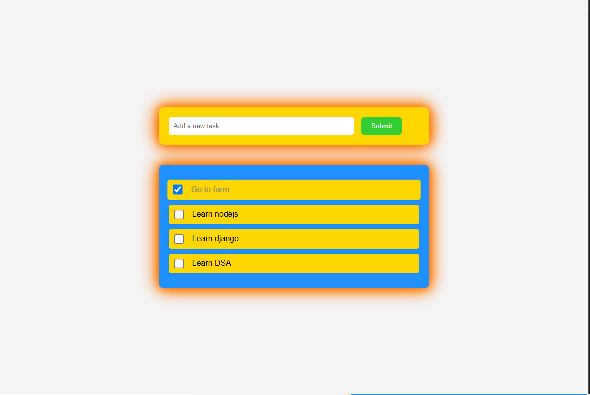
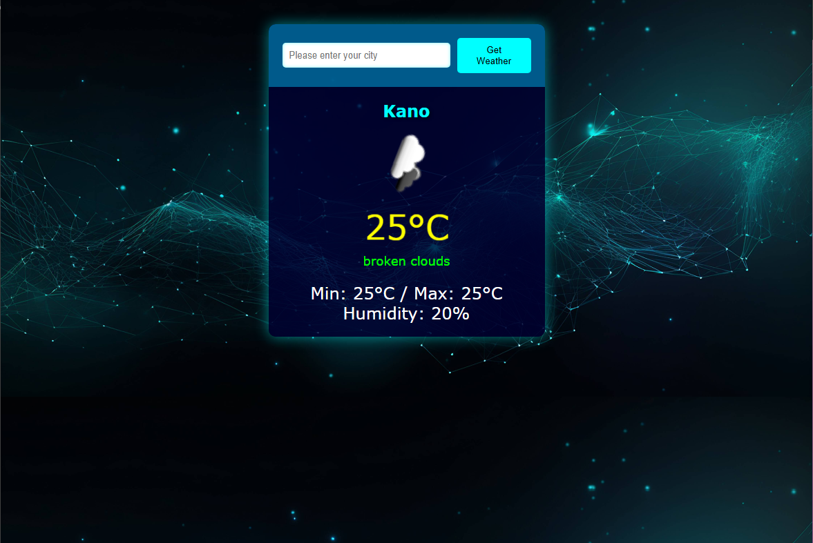
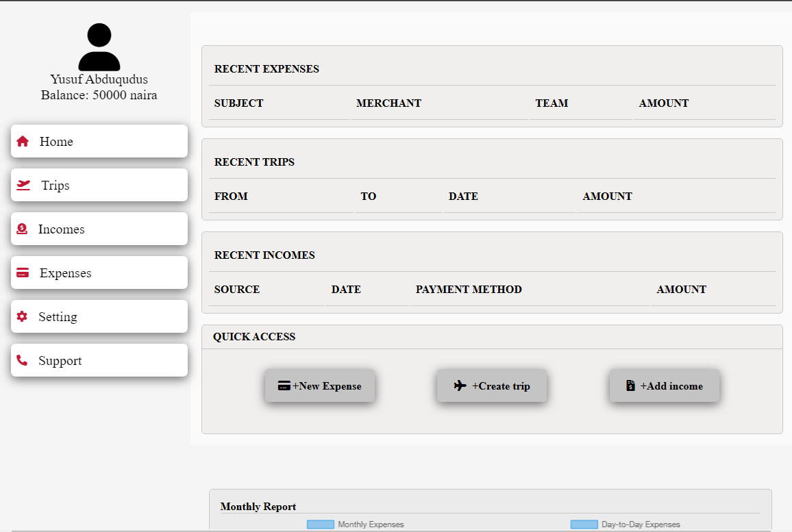
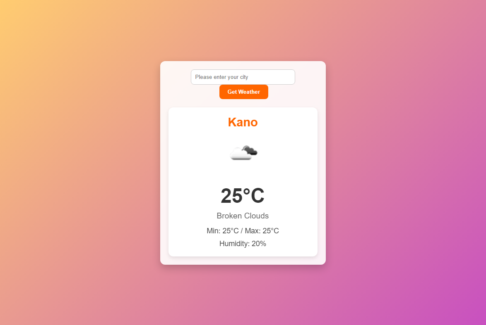
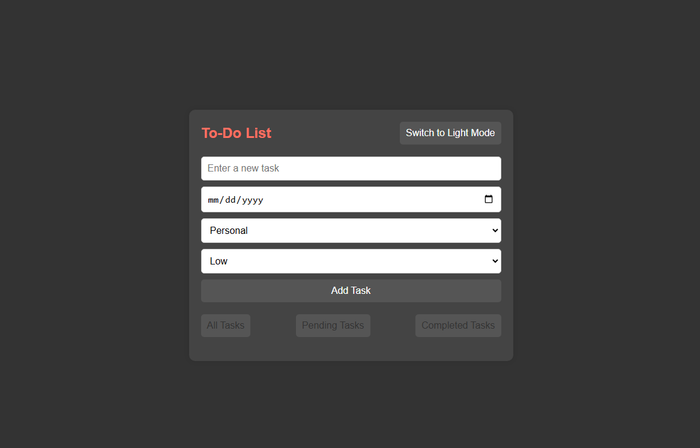

I am Yusuf Abdulqudus
I am a frontend developer who is passionate about bringing ideas in to life.

HTML
CSS
JAVASCRIPT
BOOTSTRAP
GIT
GITHUB
At Nylon Solutions Ltd, I led the design and development of a responsive e-commerce platform tailored for their quality nylon bags. I enhanced the user interface to be visually engaging and improved product page load times by 30% through optimized JavaScript and lazy loading techniques. Additionally, I integrated animations and interactive product details, ensuring seamless navigation from product listing to checkout. My focus on a mobile-first approach significantly boosted mobile conversions, driving a 25% increase in overall sales.
During my tenure at Spark Retail Technologies, I played a key role in revamping their SaaS product’s dashboard UI, focusing on enhancing usability for retailers. I collaborated closely with UX designers to implement an interactive, component-driven interface using React, which improved client satisfaction by 20%. I also developed custom form components and data visualization widgets, helping clients better interpret customer data. The project not only improved user engagement but also reduced bug resolution time by establishing clear frontend architecture.
At Urban Fleet Services, I was responsible for building out user-centric web interfaces for their fleet management software. Using Vue.js, I created sleek and dynamic dashboards that allowed clients to monitor vehicle locations and performance metrics in real-time. By optimizing code and implementing reusable components, I reduced development time by 40% for new feature releases. My work on improving map integrations also earned recognition, as clients could interact with real- time data more fluidly and intuitively.
With GreenWave Technologies, I focused on creating a visually cohesive and accessible website for their environmentally-conscious product line. By incorporating CSS animations and optimizing media for all screen sizes, I ensured a smooth and engaging browsing experience for customers. I also used jQuery to develop interactive elements that highlighted product details, resulting in a 15% increase in time spent on product pages.
A colorful, responsive e-commerce site for nylon bags, featuring product listings, search, and checkout with mobile-first design and animations.
A responsive to-do list app with added functionality for editing tasks even after page reload, improving task management.
Real-time weather updates based on user location, providing accurate and accessible weather data for local conditions.
A single-page app with a sidebar, tracking expenses efficiently with an interactive interface and dynamic, reload-free updates.
Bundled Weather App: Real-time local forecasts with fast, optimized performance using Webpack. Provides accurate, responsive weather updates on the go.
Alqudsy Updated Todo List App: A lively, editable task manager where you can update tasks anytime, even after reloading. Fun, vibrant, with dark and white theme and built for easy daily organization!